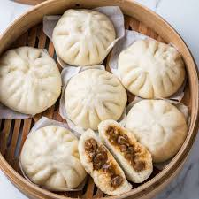

Siopao Recipe

Description
Siopao is a meat bun made in the Philippines. There are several types of meat that can be filled in the bun.
Ingredients
- 1 cup milk
- 2 tsp instant yeast
- 3 tbsp vegetable oil
- 3 1/4 cups cake flour
- 2 tsp baking powder
- 5 tbsp white sugar
- 1/4 tsp salt
- 600 grams of whatever meat filling you want
Instructions
- Heat milk for 20 seconds or until lukewarm temperature
- Add yeast and 1 tsp of sugar together and stir until dissolved. Let it sit for 5 to 10 minutes until it froths
- Combine flour, salt, baking powder, and sugar together
- Add yeast mix into the combined ingredients, and start kneading and adding oil until it has consistency to it
- Make dough into a ball, cover it in cling wrap, add oil to bowl, and let the dough rise
- Punch dough and knead for 1 to 2 minutes to get rid of air bubbles
- Form dough into a ball again and divide it into 2 pieces
- Put one of the halves into the fridge for use later while dividing the other into 6 pieces
- Form the 6 pieces into balls